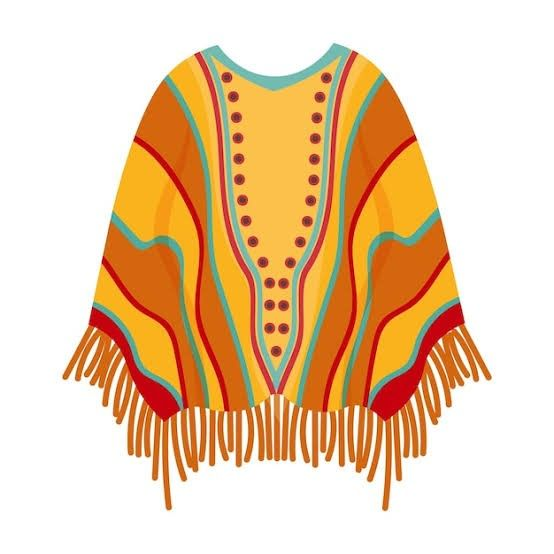

Bienvenida
¡Bienvenidos a Poncho Digital!
La plataforma oficial de la Fiesta Nacional e Internacional del Poncho. Un espacio pensado para conectar a visitantes, artesanos y productores regionales. Explora nuestro catálogo virtual, descubre la riqueza cultural de nuestros pabellones y conoce la historia detrás de cada prenda textil, artesanía y producto regional de nuestra provincia.
